Exploratory Analysis of NVSS Multiple Cause-of-Death Mortality Data
Total Overdose Deaths in the U.S. (1999-2020)
Overdose deaths defined by the following ICD-10 Underlying Cause of Death (UCOD) codes:
| Code | Description |
|---|---|
| X40–X44 | Unintentional/Accidental poisoning by drugs and other biological substances |
| X60–X64 | Suicide/Intentional self-poisoning by drugs and other biological substances |
| X85 | Assault/Homicide by drugs, biological substances, and other substances |
| Y10–Y14 | Undetermined intent, Poisoning by drugs and biological substances |
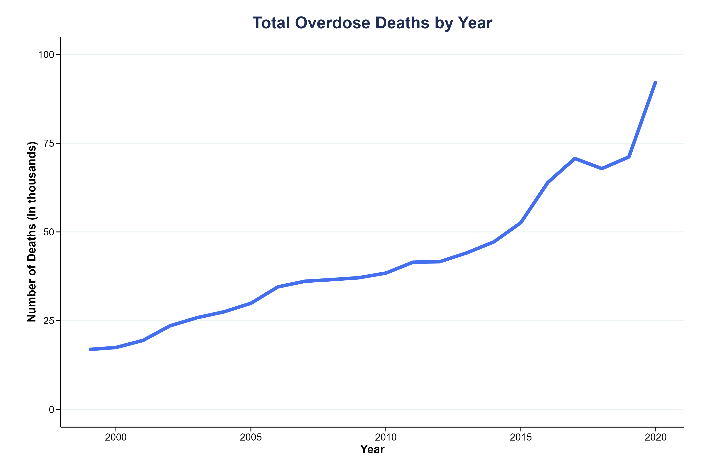
n = 936,279
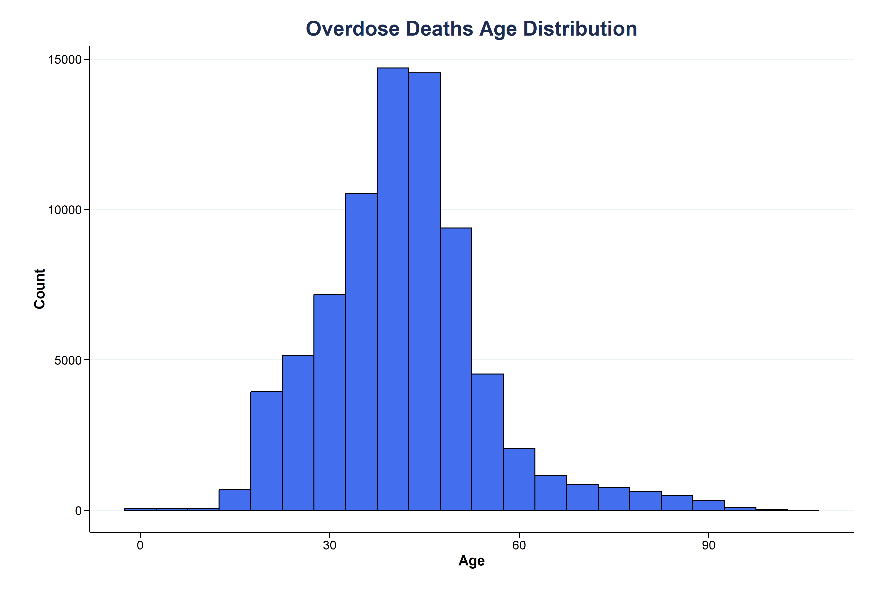

Top 10 ICD-10 Codes (1999-2020)
See results/top_icd-10_tables for top 20 ICD-10 codes in each year.
| Rank | Code | Description |
|---|---|---|
| 1 | T509 | Other and unspecified drugs/medicaments (Acidifying agents, Alkalyzing agents, Immunoglobulin, Immunologicals, Lipotropic drugs, Parathyroid hormones and derivatives) |
| 2 | X42 | Accidental poisoning by narcotics/psychodysleptics (Incl. Cannabis, Cocaine, Codeine, Heroin, Lysergide, Mescaline, Methadone, Morphine, Opium) |
| 3 | X44 | Accidental poisoning (unspecified drugs) |
| 4 | T404 | Other synthetic narcotics (Pethidine) |
| 5 | T402 | Other opioids (Codeine, Morphine) |
| 6 | T405 | Cocaine |
| 7 | T401 | Heroin |
| 8 | F191 | Mental/behavioral disorders due to psychoactive substance use (Harmful use) |
| 9 | T424 | Benzodiazepines |
| 10 | T436 | Psychostimulants with abuse potential |
This summary is not a unique number of deaths; Number of occurrences includes duplicates, for death certificates with multiple ICD-10 codes.
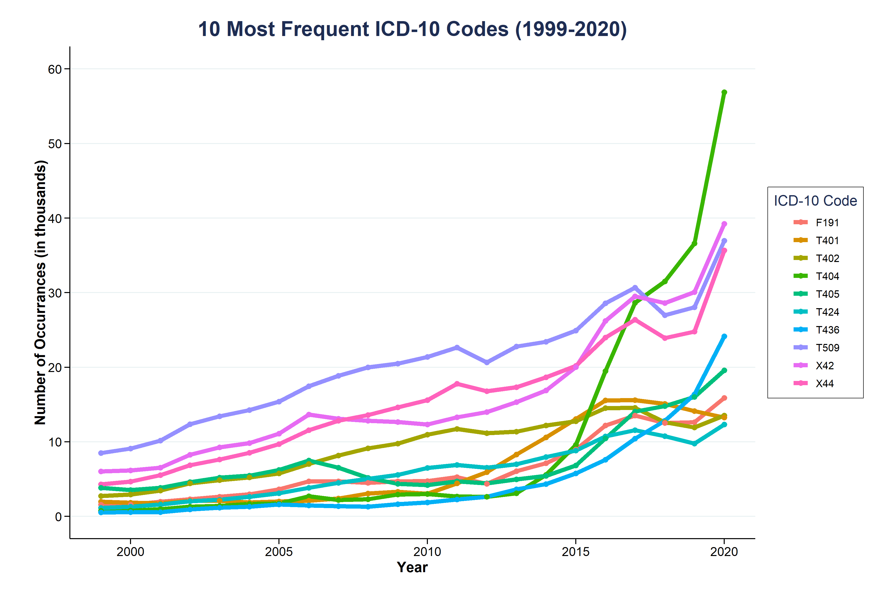
Substances of Interest (ICD-10 Codes)
| Code | Substance |
|---|---|
| Opioids | |
| T40.0 | Opium |
| T40.1 | Heroin |
| T40.2 | Other opioids (morphine, codeine) |
| T40.3 | Methadone |
| T40.4 | Synthetic narcotics (pethidine, fentanyl, etc.) |
| Stimulants | |
| T40.5 | Cocaine |
| T43.6 | Methamphetamine / other psychostimulants |
| Depressants (non-opioid) / Sedatives | |
| T42.3 | Barbiturates |
| T42.4 | Benzodiazepines |
| Other | |
| T40.7 | Cannabis (derivatives) |
Opioids
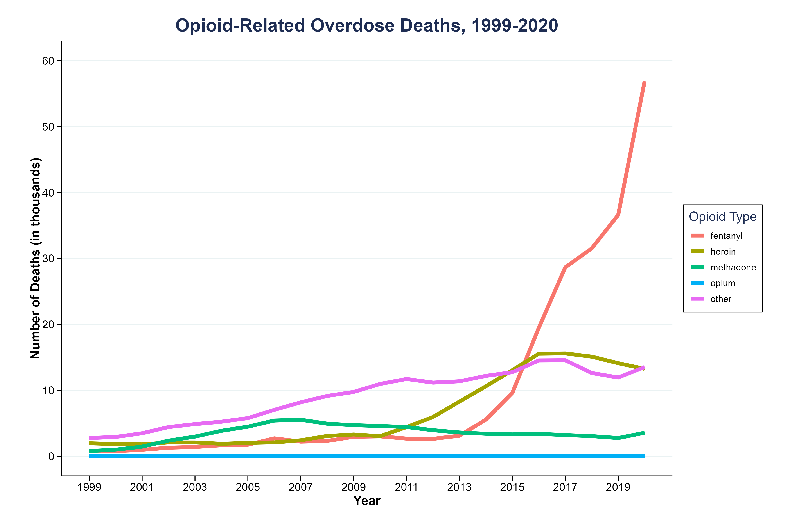
Stimulants
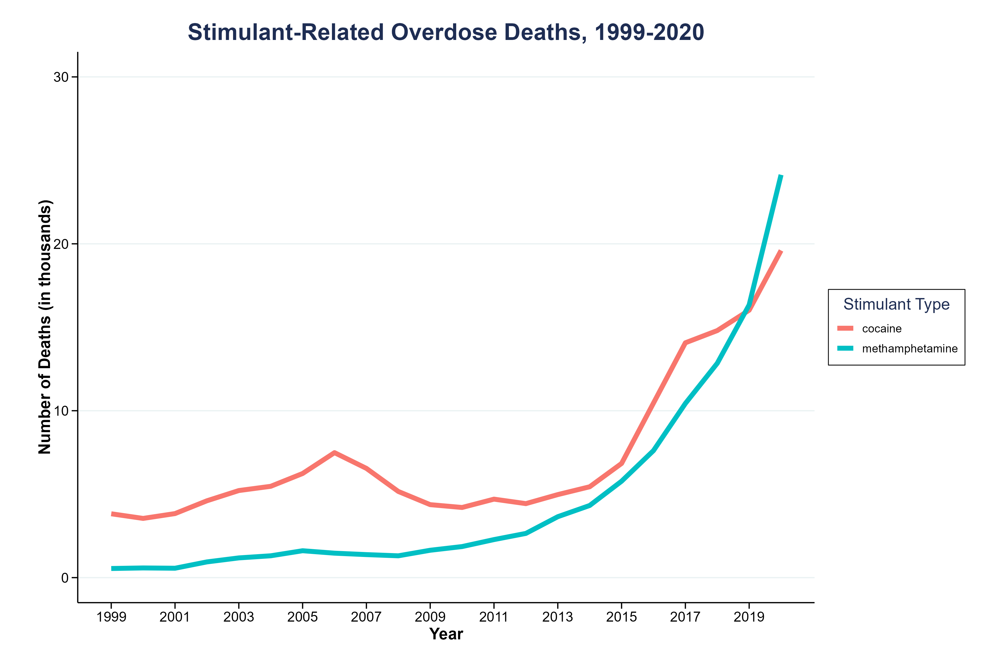
Depressants (non-opioid) / Sedatives
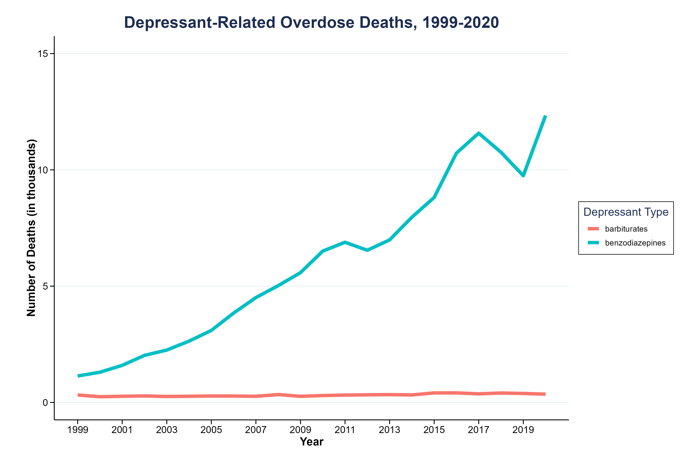
Cannabis
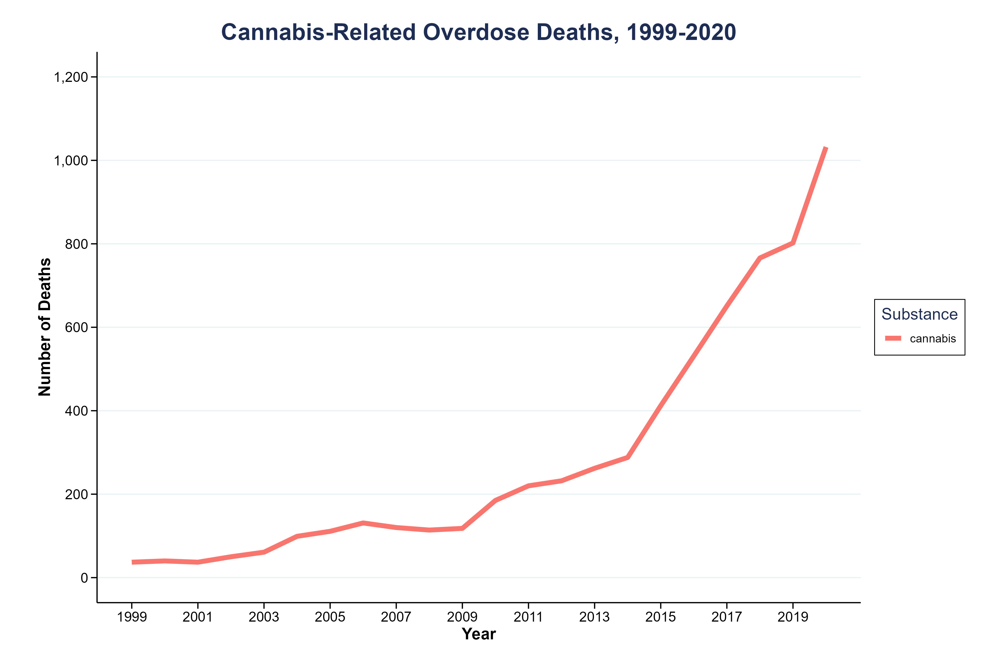
Polysubstance Prevalence
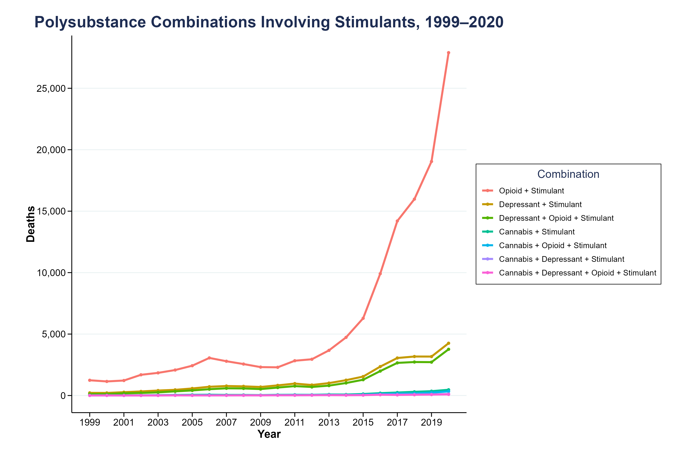 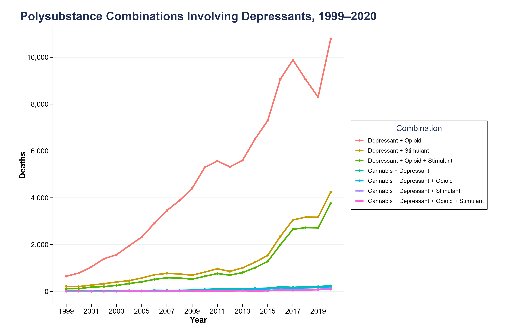 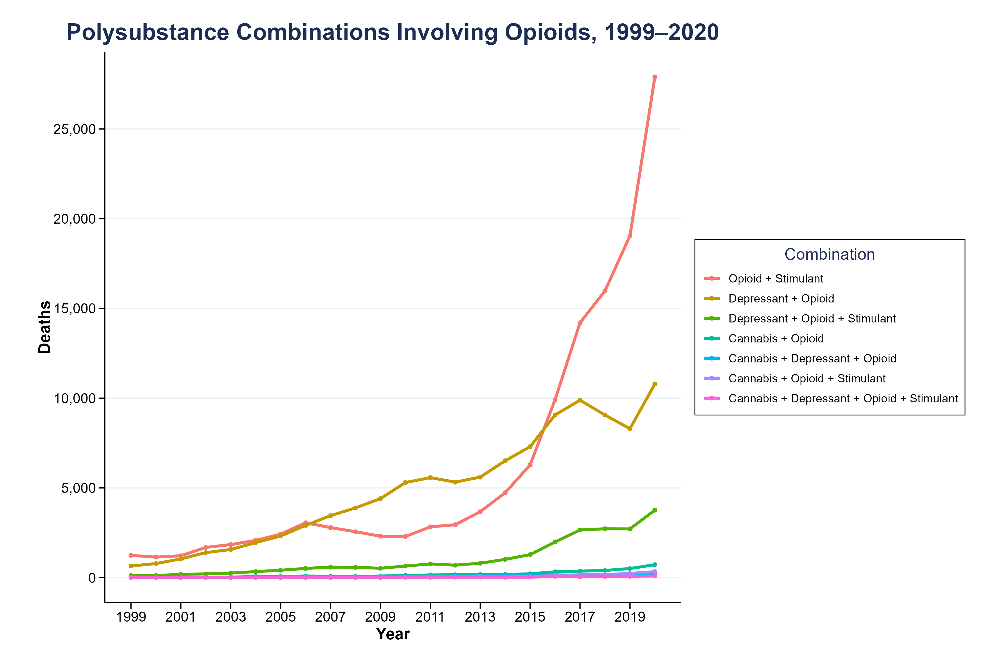
Xylazine (T42.7 & T46.5)
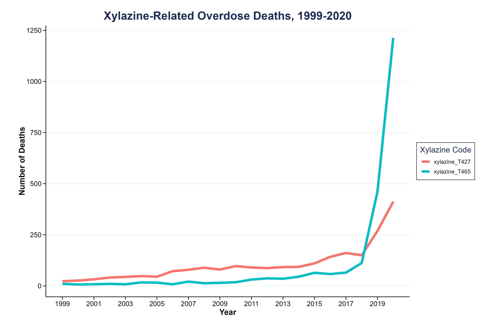 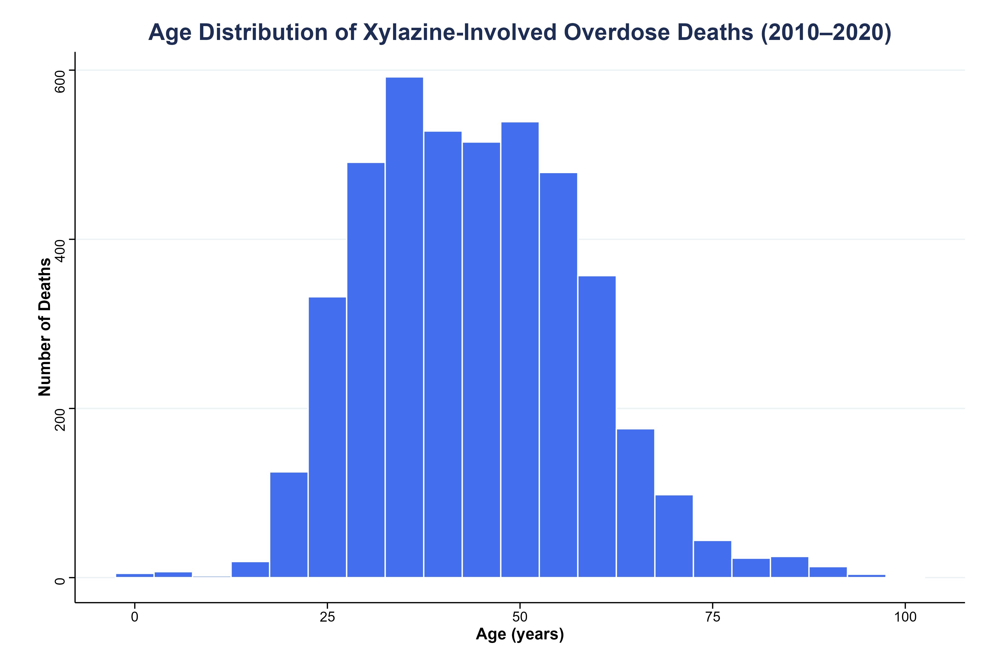 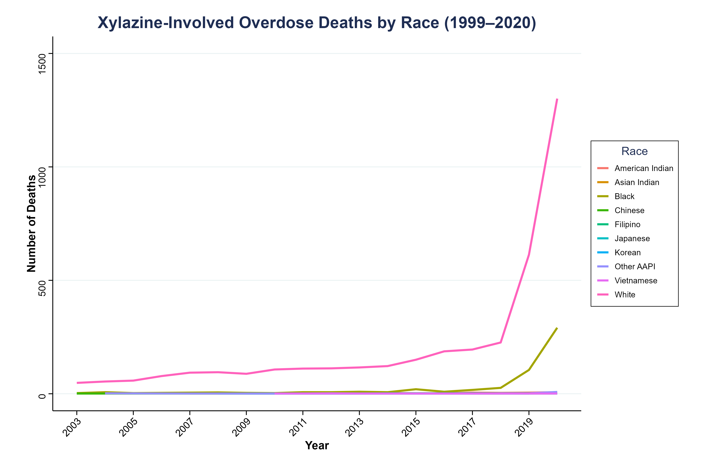 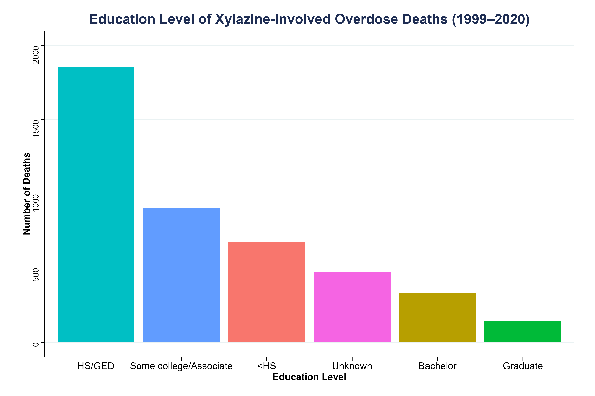 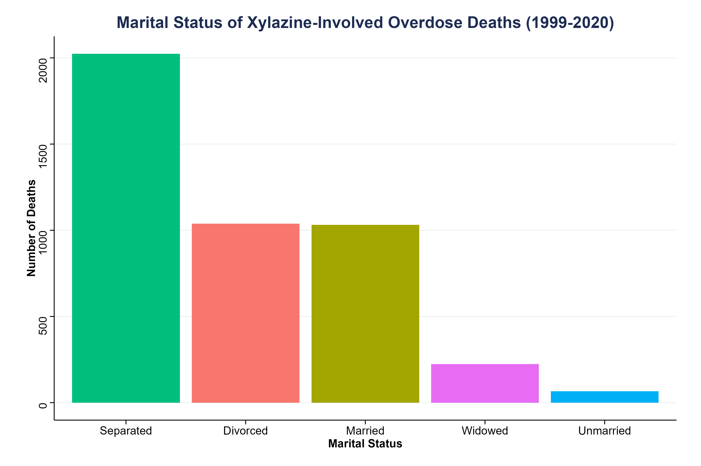
Logistic Regression Predicting Xylazine Involvement (2010-2020)
Xylazine deaths were rare pre 2015, so analyses were done only on 2010-2020 n = 631,387
The model is specified as:
\[ \text{logit}(P(\text{xylazine}=1)) = \beta_0 + \beta_1 \,\text{Year} + \beta_2 \,\text{Male} + \beta_3 \,\text{Age} + \beta_4 \,\text{Black} + \beta_5 \,\text{White} + \beta_6 \,\text{AsianIndian} + \dots + \beta_{10} \,\text{GraduateDegree} + \beta_{11} \,\text{Hispanic} + \beta_{12} \,\text{Married} + \beta_{13} \,\text{Widowed} + \dots \]
| Predictor | Estimate | Std. Error | z value | Pr(> | z |
|---|---|---|---|---|---|
| (Intercept) | -524.7 | 14.24 | -36.85 | <0.001 | *** |
| Year | 0.257 | 0.007 | 36.47 | <0.001 | *** |
| Male (vs Female) | -0.284 | 0.034 | -8.33 | <0.001 | *** |
| Age (years) | 0.0023 | 0.0014 | 1.68 | 0.093 | . |
| Asian Indian (vs Ref) | 0.863 | 0.367 | 2.35 | 0.019 | * |
| Black (vs Ref) | 0.306 | 0.186 | 1.65 | 0.100 | . |
| Chinese (vs Ref) | 0.015 | 0.607 | 0.02 | 0.981 | |
| Filipino (vs Ref) | 0.142 | 0.484 | 0.29 | 0.769 | |
| Guamanian (vs Ref) | -10.02 | 152.3 | -0.07 | 0.948 | |
| Hawaiian (vs Ref) | -10.13 | 118.1 | -0.09 | 0.932 | |
| Japanese (vs Ref) | 1.500 | 0.424 | 3.54 | <0.001 | *** |
| Korean (vs Ref) | 0.389 | 0.485 | 0.80 | 0.422 | |
| Other AAPI (vs Ref) | 0.497 | 0.293 | 1.70 | 0.089 | . |
| Samoan (vs Ref) | -10.14 | 130.8 | -0.08 | 0.938 | |
| Vietnamese (vs Ref) | 0.510 | 0.485 | 1.05 | 0.292 | |
| White (vs Ref) | 0.431 | 0.181 | 2.38 | 0.017 | * |
| Bachelor’s degree | 0.233 | 0.072 | 3.22 | 0.001 | ** |
| Graduate degree | 0.360 | 0.104 | 3.46 | <0.001 | *** |
| HS / GED | 0.053 | 0.047 | 1.14 | 0.255 | |
| Some college / Associate | 0.062 | 0.053 | 1.16 | 0.244 | |
| Education unknown | 0.243 | 0.087 | 2.78 | 0.005 | ** |
| Hispanic (vs Non-Hispanic) | -0.298 | 0.064 | -4.67 | <0.001 | *** |
| Married (vs Ref) | 0.127 | 0.049 | 2.59 | 0.010 | ** |
| Separated (vs Ref) | 0.078 | 0.046 | 1.70 | 0.089 | . |
| Unmarried (vs Ref) | -0.237 | 0.149 | -1.59 | 0.112 | |
| Widowed (vs Ref) | 0.216 | 0.081 | 2.66 | 0.008 | ** |
*** p < 0.001 ** p < 0.01 * p < 0.05 . p < 0.1
Appendix
Data Source
NBER/NVSS Multiple Cause-of-Death Data
- Multiple Cause-of-death Mortality Data from the National Vital Statistics System (NVSS) of the National Center for Health Statistics (NCHS)
- National Bureau of Economic Research Public Use Data Archive
- Downloaded on 4 September 2025